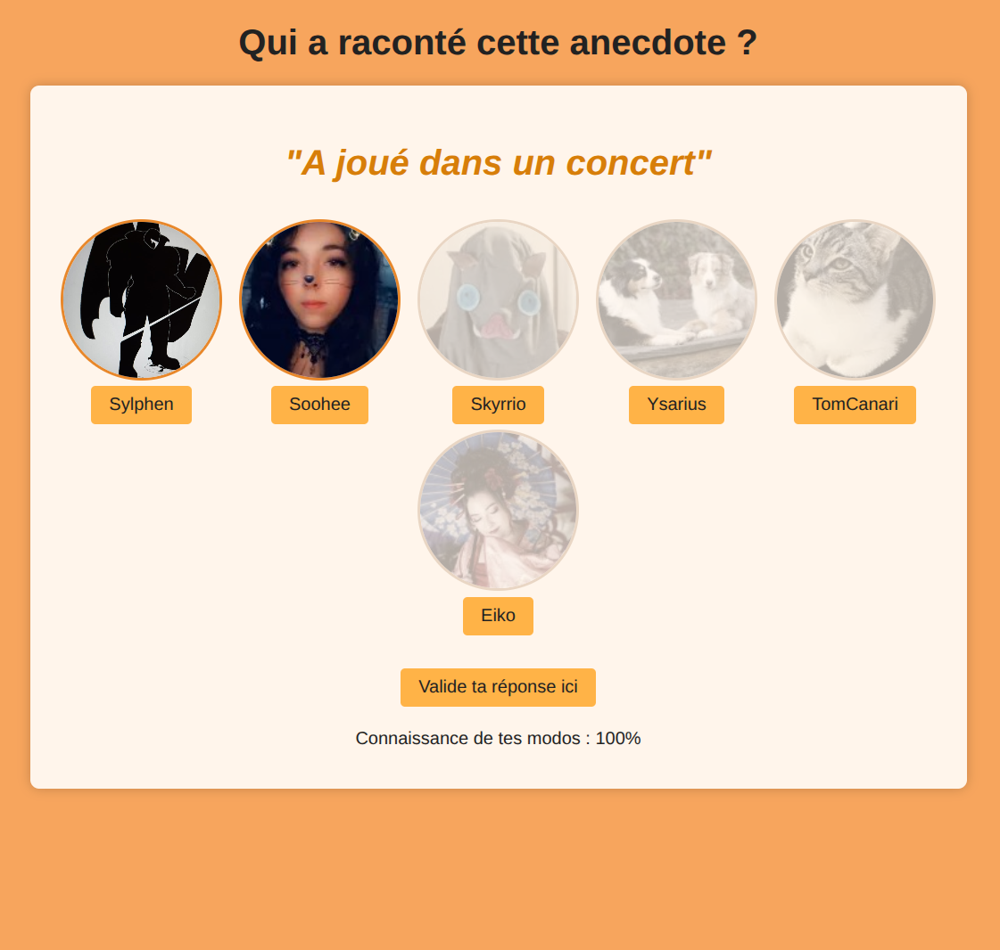
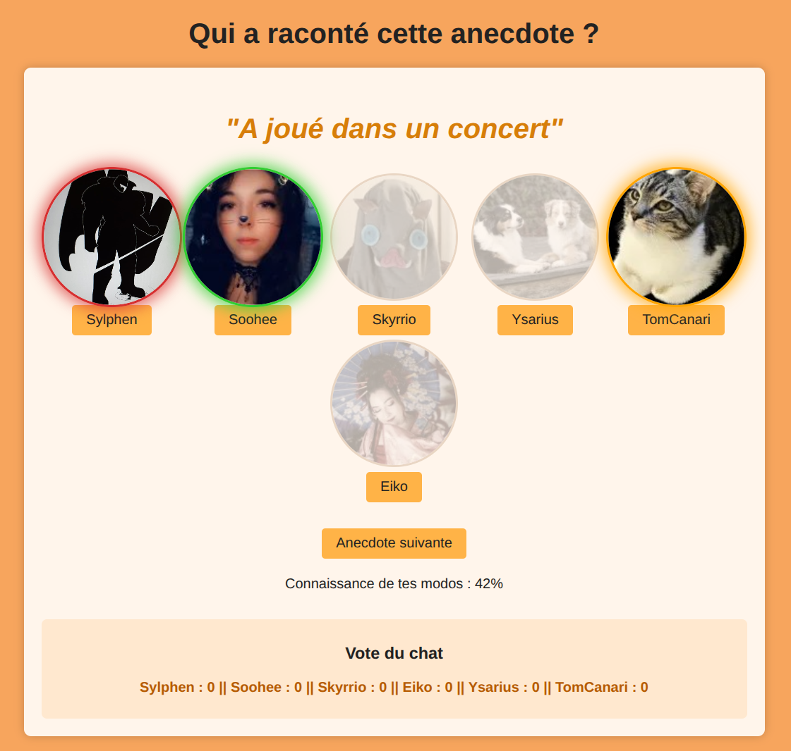

git commit -m "feat(thomas): ajout page projet Qui a dit ça ? avec chat Twitch"
git commit -m "feat(thomas): ajout page projet Qui a dit ça ? avec chat Twitch"
“Qui a dit/vécu cela ?” est un mini-jeu web interactif réalisé pour le subathon de la streameuse Nunakeau. Le but du jeu : deviner quel modérateur a raconté chaque anecdote tout en permettant au chat Twitch de voter en direct.
Le jeu affiche une anecdote parmi une liste d'experience vécue par un modérateur. La streameuse clique sur les avatars des modérateurs pour indiquer sa réponse ou ses réponses. le logiciel montre visuellement la solution une fois les réponses validées. Un score de connaissance des modos est alors mesuré.
Le chat Twitch peut voter en temps réel en tapant le pseudo du modérateur. Les votes sont d'abord invisibles pendant que la streameuse réfléchit, puis affichés et figés après validation. Le score final est calculé en pourcentage de bonnes réponses.
Le projet fonctionne entièrement dans le navigateur, sans backend. Il suffit d'ouvrir index.html pour jouer (si modification) ou d'utiliser le lien . Chaque anecdote est validée via le bouton "Valider" et l'utilisateur peut ensuite passer à l'anecdote suivante. Les couleurs indiquent visuellement le résultat des réponses : 🟩 vert = bonne, 🟥 rouge = mauvaise, 🟨 orange = bonne mais non trouvée, ⚪ gris = inactif.
L'interactivité du chat est gérée via TMI.js. qui affiche les réponses uniquement lorsque la réponse est validée.
Exemple d'écran du jeu apres choix des réponses:
Ecran affichant les votes du chat et solutions après validation :

Le développement comprenait :
- Recupéation des anecdotes auprès de chaque modérateur (réunion,suivi...)
- Conception du front-end pour afficher anecdotes et avatars de manière claire
- Mise en place du système de feedback visuel et du calcul de score
- Intégration de TMI.js pour récupérer les votes du chat Twitch